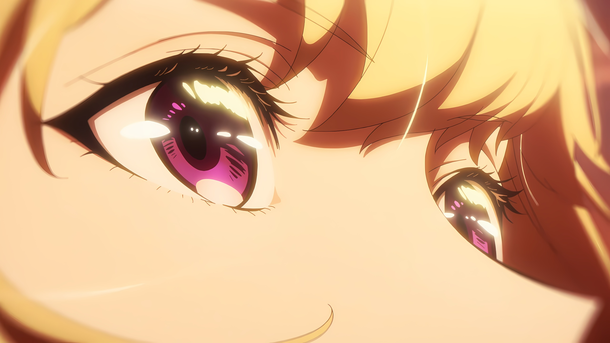

AFTER THE
RAIN.
West Lake Museum, Hangzhou
“雨后初晴”是一场关于感知与气氛的实验。在本次展览中，严旭试图通过水墨的晕染特性，捕捉江南气候中特有的湿润感。这不仅仅是对风景的描绘，更是对空气、湿度以及时间流逝的物理性表达。
展览空间被设计成一个半透明的迷宫，丝绸与宣纸交错悬挂。观众在其中穿行，仿佛置身于雨后的山林之中。墨色的深浅变化模拟了云雾的消散过程，旨在探讨传统水墨在当代装置艺术语境下的可能性，以及如何用古老的媒介回应现代人对“静谧”的渴望。
SELECTED WORKS
 01. Mountain Breeze / 山间清风 (180x90cm)
01. Mountain Breeze / 山间清风 (180x90cm)
 02. Mist Study I / 迷雾研究一
02. Mist Study I / 迷雾研究一
 03. Mist Study II / 迷雾研究二
03. Mist Study II / 迷雾研究二
 04. Trace No.1
04. Trace No.1
 05. Trace No.2
05. Trace No.2

06. Trace No.3
07. Silent Valley / 寂静谷 (Featured)
08. Detail View
09. After The Rain / 雨后 (Installation View)
10. Stone / 石
11. Water / 水
12. Wood / 木
Next Exhibition
静谧的声音 (2022)